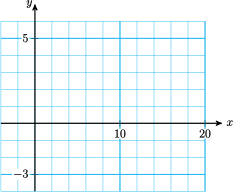

Section 9.5 Equations with Radicals
¶Subsection Radical Equations
When an object falls from a height of \(h\) meters, the time it takes to reach the ground is given in seconds by
This equation is called a radical equation, because an unknown value, \(h\text{,}\) appears under a radical sign.
A radical equation is one in which the variable appears under a radical.
Example 9.44.
If you drop a penny from the top of the Sears Tower in Chicago, it will take 9.5 seconds to reach the ground. Find the height of the Sears Tower in meters by solving the equation
To solve the equation, we undo the operations performed on \(h\text{.}\) To undo the operation of taking a square root, we can square both sides of the equation. Remember that we undo the operations in the opposite order, as follows.
| Operations performed on \(h\) | \(\hphantom{0000}\) | Steps for solution |
| 1. Divide by 4.9 | \(\hphantom{0000}\) | 1. Square both sides |
| 2. Take square root | \(\hphantom{0000}\) | 2. Multiply by 4.9 |
Here is the solution.
The Sears Tower is about 442 meters tall.
To Solve a Radical Equation.
- Isolate the radical on one side of the equation.
- Square both sides of the equation.
- Continue as usual to solve for the variable.
Subsubsection Reading Questions
1.
What is a radical equation?
Example 9.45.
Solve the radical equation \(~~\sqrt{x-3} = 4\)
We square both sides of the equation to produce an equation without radicals.
You can check that \(x=19\) satisfies the original equation.
Subsection Extraneous Solutions
The technique of squaring both sides may introduce extraneous solutions. (Recall that an extraneous solution is a value that is not a solution to the original equation.) For example, consider the equation
Squaring both sides gives us
However, if we substitute into the original equation, we see that it is not a solution.
The value \(x=7\) is a solution to the squared equation, but not to the original equation. In this case, the original equation has no solution.
Subsubsection Reading Questions
2.
When we solve a radical equation, what causes extraneous solutions to be introduced?
Whenever we square both sides of an equation, we must check the solutions in the original equation.
If a radical equation involves several terms, it is easiest to isolate the radical term on one side of the equation before squaring both sides.
Example 9.46.
Solve \(~~4+\sqrt{8-2x} = x\)
We first isolate the radical by subtracting from both sides to get
Now we square both sides to obtain
The possible solutions are \(x=4\) and \(x=2\text{.}\) We check both of these in the original equation.
\(\blert{\text{Check:}}\) For \(x=\blert{4}\text{,}\)
For \(x=\blert{2}\text{,}\)
Thus, \(x=2\) is an extraneous solution. The only solution to the original equation is \(x=4\text{.}\)
Caution 9.47.
When squaring both sides of an equation, we must be careful to square the entire expression on either side of the equal sign. It is incorrect to square each term separately. Thus, in Example 1, it would not be correct to write
Subsubsection Reading Questions
3.
True or false: to solve a radical equation, we should square each term of the equation. Explain.
Subsection Equations with Cube Roots
We can also solve equations in which the variable appears under a cube root.
Example 9.48.
Solve the equation \(~~15-2\sqrt[3]{x-4} = 9\)
We first isolate the cube root.
Next, we undo the cube root by cubing both sides of the equation.
Finally, we add 4 to both sides to find the solution, \(x=31\text{.}\) We do not have to check for extraneous solutions when we cube both sides of an equation, but it is a good idea to check the solution for accuracy anyway.
\(\blert{\text{Check:}}\) Substitute \(\alert{31}\) for \(x\) into the left side of the equation.
Subsubsection Reading Questions
4.
How can we solve an equation if the variable appears under a cube root?
Subsection Extraction of Roots
Now we'll compare solving radical equations, where we square both sides, with quadratic equations, where we may be able to take square roots of both sides.
Example 9.49.
Solve by extraction of roots \(~~2(3x-1)^2 = 36\)
We first isolate the squared expression: we divide both sides by 2.
Now we solve each equation, to find two solutions.
We write the solutions as \(~\dfrac{1 \pm 3\sqrt{2}}{2}\text{.}\)
Subsubsection Reading Questions
5.
Is it true that \(1+3\sqrt{2} = 4\sqrt{2}\text{?}\) Why or why not?
Subsection Skills Warm-Up
¶Subsubsection Exercises
Square each expression.
1.
- \(3x\)
- \(3+x\)
2.
- \(\sqrt{3x}\)
- \(3\sqrt{x}\)
3.
- \(\sqrt{x+3}\)
- \(\sqrt{x}+\sqrt{3}\)
4.
- \(x-\sqrt{3}\)
- \(3-\sqrt{x}\)
5.
- \(2-3\sqrt{x}\)
- \(2\sqrt{2x-3}\)
6.
- \(2+\sqrt{x-3}\)
- \(3+2\sqrt{x-3}\)
Subsubsection Answers to Skills Warm-Up
Subsubsection Exercises
Subsection Homework 9.5
For Problems 1–5, solve and check.
1.
\(\sqrt{x+4}=5\)
2.
\(\sqrt{x}-4=5\)
3.
\(6-\sqrt{x}=8\)
4.
\(2+3\sqrt{x-1}=8\)
5.
\(2\sqrt{3x+1}-3=5\)
6.
Use the graph of \(y=\sqrt{x}\) shown below to solve the equations. (You may have to estimate some of the solutions.) Check your answers algebraically.
- \(\sqrt{x} = 4\)
- \(\sqrt{x} = 2.5\)
- \(\sqrt{x} = -2\)
- \(\sqrt{x} = 5.3\)
7.
The equation for the semicircle shown is
Find the \(x\)-coordinates of two different points on the semicircle that have \(y\)-coordinate 2.
For Problems 8–12, solve, and check for extraneous solutions.
8.
\(\sqrt{x}=3-2x\)
9.
\(\sqrt{x+4}+2=x\)
10.
\(x+\sqrt{2x+7}=-2\)
11.
\(\sqrt{x+7}=2x-4\)
12.
\(6+\sqrt{5x-4}-x=4\)
For Problems 13–15, solve.
13.
\(2\sqrt[3]{x}+15=5\)
14.
\(\sqrt[3]{2x-5}-1=2\)
15.
\(2=8-3\sqrt[3]{x^3+1}\)
For Problems 16–18, solve by extraction of roots, and simplify your answer.
16.
\((2x+1)^2=8\)
17.
\(3(2x-8)^2=60\)
18.
\(\dfrac{4}{3}(x+3)^2=24\)
For Problems 19–20, solve the formula for the indicated variable.
19.
\(x^2+a^2=b^2~~~~\) for \(x\)
20.
\(\dfrac{x^2}{4}-y^2=1~~~~\) for \(x\)
21.
-
Complete the table of values and graph \(y=\sqrt{x-4}\text{.}\)
\(x\) \(y\) \(4\) \(\hphantom{0000}\) \(5\) \(\hphantom{0000}\) \(6\) \(\hphantom{0000}\) \(10\) \(\hphantom{0000}\) \(16\) \(\hphantom{0000}\) \(19\) \(\hphantom{0000}\) \(24\) \(\hphantom{0000}\) 
- Solve \(~\sqrt{x-4}=3~\) graphically and algebraically. Do your answers agree?
22.
-
Complete the table of values and graph \(y=4-\sqrt{x+3}\text{.}\)
\(x\) \(y\) \(-3\) \(\hphantom{0000}\) \(-2\) \(\hphantom{0000}\) \(0\) \(\hphantom{0000}\) \(1\) \(\hphantom{0000}\) \(4\) \(\hphantom{0000}\) \(8\) \(\hphantom{0000}\) \(16\) \(\hphantom{0000}\)  - Solve \(~4-\sqrt{x+3}=1~\) graphically and algebraically. Do your answers agree?
23.
The higher your altitude, the farther you can see to the horizon, if nothing blocks your line of sight. From a height of \(h\) meters, the distance \(d\) to the horizon in kilometers is given by
- Mt. Wilson is part of the San Gabriel mountains north of Los Angeles, and it has an elevation of 1740 meters. How far can you see from Mt. Wilson?
- The new Getty Center is built on the hills above Sunset Boulevard in Los Angeles, and from the patio on a clear day you can see the city of Long Beach, 44 kilometers away. What does this tell you about the elevation at the Getty Center?
24.
The speed of a tsunami is given, in miles per hour, by
where \(d\) is the depth of the ocean beneath the wave, in feet. A tsunami traveling along the Aleutian Trench off the coast of Alaska is moving at a speed of over 615 miles per hour. Find the depth of Aleutian Trench.
25.
The height of a cylindrical storage tank is four times its radius. If the tank holds \(V\) cubic inches of liquid, its radius in inches is
- If the tank should hold 340 cubic inches, what must its radius be?
- If the radius of the tank is 5.5 inches, how much liquid can it hold?